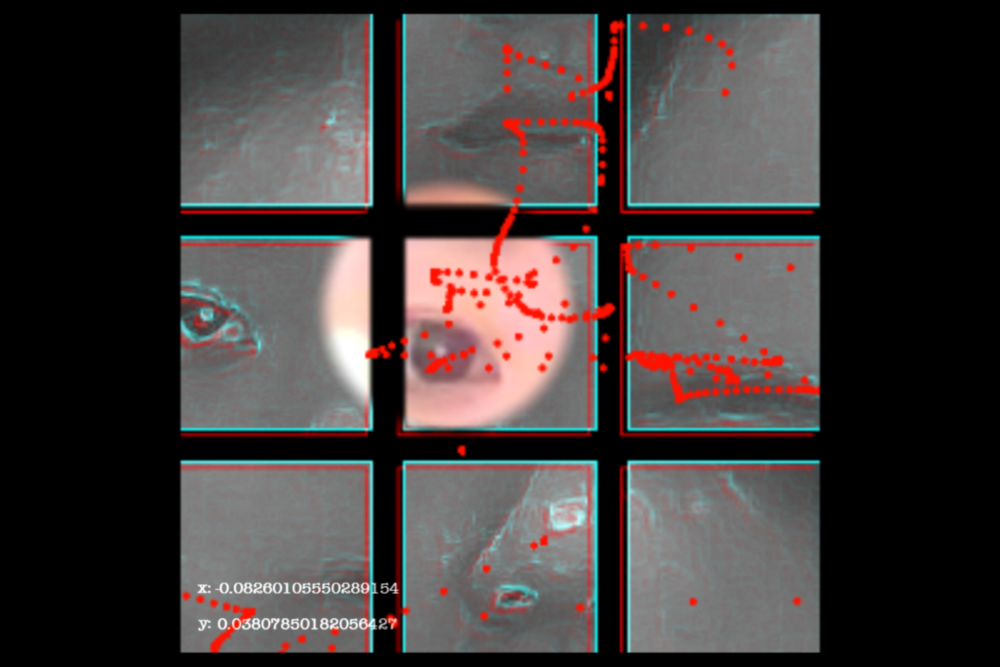
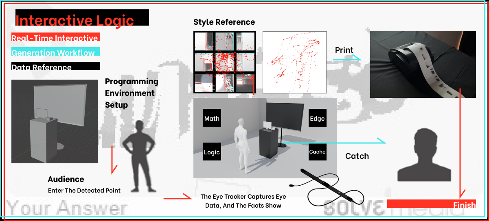

Identity
Code
Identity Code
As technology reshapes human existence through algorithms, the perception of "authentic identity" becomes increasingly blurred. This installation uses an eye tracker to capture real-time visual trajectories, translating them into unique identity codes that are simultaneously printed onto physical media. By materializing invisible consciousness into tangible credentials, the work investigates the possibility of affirming individual presence amidst technological intervention.


// PROCESS

The system captures the live feed via camera for on-screen display, while the eye tracker concurrently monitors gaze data to drive a real-time visual trajectory. This process generates a unique identity code for each participant, which is then physicalized through a synchronized printer.